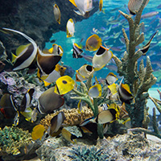

水族館 - aquarium -
水族館是開放予公眾觀賞水生物種的建築物。大部份的公眾水族館都有數個較小的水族箱，及1個或幾個的大型水族箱。大型水族箱的水容量可達數千，甚至逾萬立方米，可以飼養大型物種，如海豚、鯊魚、白鯨。半水生動物如水獺、企鵝、海獅、海豹亦可飼養於水族館內。水族館通常有專門的研究人員，研究園內物種的生境及生活規律。
一座良好水族館應有特別的展覽，包括其長駐的物種，以吸引遊客再次光臨。近年，大型水族館都嘗試取得及育養多個品種的海洋魚類，甚至是水母。亦有部份水族館設有動物互動園（petting zoo），例如，蒙特利海灣水族館有一個淺水水族箱，飼養著一些鰩魚，遊客可觸摸鰩魚似皮革的皮膚。
優秀的水族館通常都附設有重要的海洋學研究機構，自行進行研究計劃，此外，水族館亦會推行很多環境及物種保育工作。